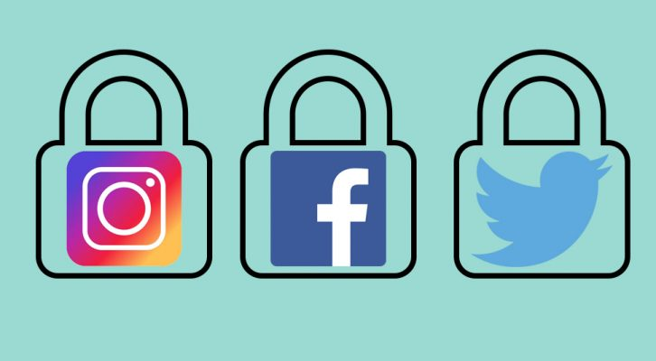

Media
6 Tips for Protecting your Social Media Accounts:
| Get to know your privacy settings | On every social platform there is some type of settings that you go into to fix to your liking and make things private. |
| Be careful who you friend online | You have to understand that not everyone is your friend so be cautious on who you are accepting to view your profile |
| Sharing is not always caring | Not everything you do in your life needs to be posted online unless your on a realtiy show. |
Multi-factor authentication |
You can use text messaging or maybe set up a secret code to use when logging into a new device; now you will have double security:) |
| Don't use social credentials to sign into Third-Party sites | I know it can be tempting to register using "facebook" but using that option will make you vunerable to hackers that can access your infomation about you without consent |
| Use a strong password | Make your passwords diffcult for hackers to not access your account |
